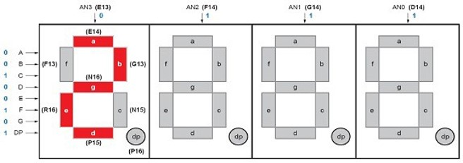
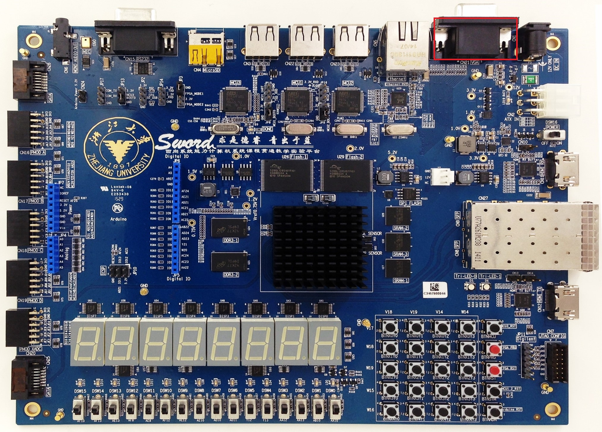

Sword 接口说明¶
开关交互¶
Sword 主板上开关共有 16 个，位置如下图所示，每个开关的引脚为开关下侧的编号，如最右侧的开关的引脚为 AA10。

其引脚约束代码如右：SW.xdc
当开关闭合时，对应引脚的输入为 1，反之为 0。
子板 LED 交互¶
Arduino 子板上 LED 共有十六个，位置如下图所示，每个 LED 的引脚为 LED 上方的编号，如最左侧的子板 LED 的引脚为 W23。
其引脚约束代码如右：LED.xdc
当对应引脚输出为 1 时，LED 亮，否则 LED 灭。
按钮交互¶
Sword 主板上按钮共有 20 个，位置如下图所示。每个按钮对应其左方和上方两个引脚编号，其中左侧的表示按钮的行，右侧的表示按钮的列。
其引脚约束代码如右：BTN.xdc
当某个按钮按下时，其对应行和列引脚的输入为 0，否则各引脚的输出为 1。
在使用按钮交互时，需要为按钮添加防抖动模块，即当按钮对应引脚的值在一段时间之内保持在 0 后，方认为按钮被按下。其模块接口可定义如下：
module anti_jitter(
input clk,
input btn,
output btn_ok
);
子板七段数码管交互¶
Arduino 子板上有七段数码管四位，位置如下图所示。在子板上标注了其各个引脚。
其引脚约束代码如右：SEG.xdc
其中，SEG 和 AN 接口的作用如下图。

SEG 用于表示七段数码管显示的图案，0 代表对应位置的管亮，1 代表对应位置的管不亮。
当某一位 AN 为 0 时，该位显示 SEG 所表示的图案，否则该位不显示。
VGA 交互¶
Sword 主板上有一个 VGA 接口，位置如下图所示。

其引脚约束代码如右：VGA.xdc
具体使用方式见实验十文档。
PS/2 交互¶
Sword 主板上有 PS/2 接口，位置如下图所示。
其引脚约束代码如右：PS2.xdc
PS/2 协议每次传输时，使用十一位信号传递一个字节的数据，先后为：1 位的起始位（始终为 0）、8 位的数据位、1 位的校验位以及 1 位的终止位（始终为 1），如下图：

由图，可得 PS2 模块通过在 PS2_clk 信号的下降沿时采集 PS2_data 信号的值即可得到 PS2 接口传入的数据。
每次键盘按下时，会传入一个通码（Make），包含 1~2 字节；每次键盘松开时，会传入一个断码（Break），包含 2~3 字节。
常用的通码键盘对照表如下图所示：

当某一按键的通码长 1 字节，为 0xYY 时，其断码长 2 字节，为 0xF0 0xYY；当某一按键的通码长 2 字节，为 0xE0 0xYY 时，其断码长 3 字节，为 0xE0 0xF0 0xYY。